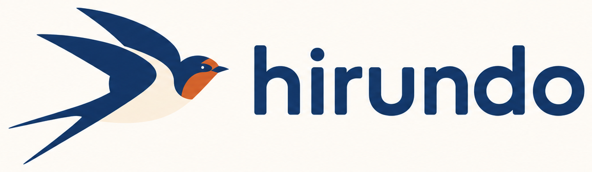
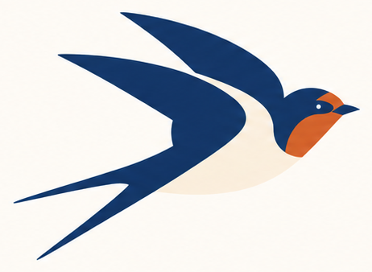

браузер · замыселБраузер, который летает.
Hirundo — пространственный браузер на Saltic. Страницы не прячутся в ленте вкладок, а лежат на холсте: рядом то, что связано, островами — то, чем ты занят. Отдалился — видишь всё открытое. Приблизился — читаешь.

Пространство вместо ленты
Обычно
- двадцать одинаковых вкладок сверху
- через час не помнишь, где что
- история — длинный список
- связь между страницами теряется
В Hirundo
- страницы — карточки на холсте
- перешёл по ссылке — новая легла рядом, от старой к ней ниточка
- история — след полёта, видно, откуда ты пришёл
- острова: работа, музыка, Saltic — перелетай между ними
Как это может выглядеть
Набросок: тащи холст мышью, колесо приближает к курсору, клик по странице — открыть её, двойной клик по пустому месту — все острова. Рыжий пунктир — след полёта, ласточка на его конце — где ты сейчас.
Зачем он нужен
Компьютер-флешка на нашей ОС должен открывать страницы. Hirundo — то, чем он будет смотреть в сеть.
Написан на Saltic: от разбора страницы до пикселя — один язык, любой слой можно открыть и прочитать.
Тот же 2D-холст, что у карты веток в SalticIDE: приближение к курсору, мини-карта, перетаскивание.
Почему ласточка. Она быстрая и ловкая: ловит добычу на лету и меняет курс на ходу. Каждую весну возвращается к своему гнезду — как к острову вкладок, к которому хочется вернуться. Hirundo — латинское название рода ласточек.